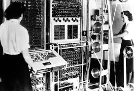
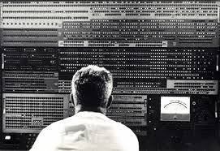
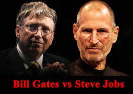
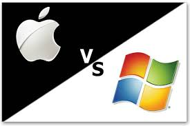
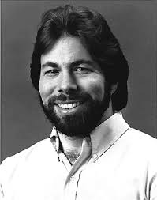
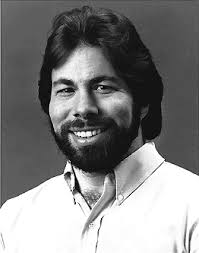
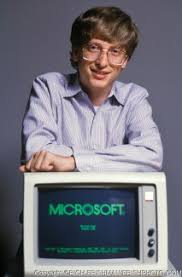

Computer History
 A computer is a device that can be instructed to carry out an arbitrary set of arithmetic or logical operations automatically. The ability of computers to follow generalized sequences of operations.This enable them to perform a wide range of tasks. Computer Histroy started in 1822, Charles Babbage construct and began developing the Difference Engine, considered to be the first automatic computing machine. The Difference Engine was capable of computing several sets of numbers and making hard copies of the results.It was considered by many to be the first computer programmer and notes on the Difference Engine. But ,Unfortunately nobody was able to complete a full-scale functional version of this machine. In June of 1991, the London Science Museum completed the Difference Engine No 2 for the bicentennial year of Babbage's birth and later completed the printing mechanism in 2000.
Apple VS MicroSoft
 Long time ago, Computer was invented. But the first computer was very slow, and it was hard to control this computer. In this webpage, I will introduce the personal computer History. Computer's History is almost 100 years. It took time to evolve computer which we are now using. Personal computer was invented in 1975 by Apple company. But Microsoft company chased Apple computer. Apple company and Microsoft competed developing Computer each other for a long time. And, even if after Steve jobs died, these two companies keep on competing to develop computer. As you know, Apple was made by Steve Jobs, and Microsoft was made by Bill Gates. This two guys are same age. But, Bill was born in rich family, and Steve was born in low level wage family. Surrounding Environment was totally different. So, that's why I will Introduce their history.
 

Apple was established!!
In 1974, Steve Jobs was working in Atari Company. When he was working in this company, he usually made a human relationship problem, and he couldn't share work with his coworkers. 1 year later, in 1975, Steve Jobs quite Atari company, and he tried to create personal computer with Steve Wozniak, who are electrical engineer and graduated UC Berkley. They gathered coworkers, and They accomplished First Personal Computer, “Apple I". This device was sold rapidly; they were appraised that you change the world. However, after that Bill Gates come up with this business suddenly. Bill Gates gathered his coworkers, and They made Windows 98. In this time, this two guys and two companies start competing for a long time.
Microsoft
However, Bill Gates dropped out Harvard university. After that he gathered his friends to make Microsoft. He was pursuing great software program. Then, in 1995, Microsoft start selling Windows 98. IT Revolution started this year. Every technology start evolving amazingly speed from this year. For a while, Bill Gates won race and he dominate IT market for a while until Steve jobs restart working in Apple.
Back to Top